Aula 11 - IEEE 802.11
Diego Passos
Universidade Federal Fluminense
Redes de Computadores II
Na Última Aula (I)...
Enlaces sem fio:
mais propensos a erros
.
Sinais recebidos com
baixa potência
.
Altos níveis de
ruído, interferência
.
Múltiplos percursos
de propagação.
Tudo isso colabora para queda no
SNR
.
Resulta em queda da
BER
.
Solução: adaptação automática entre
múltiplas taxas.
Outros problemas:
terminais escondidos
.
CDMA: outra técnica comum para
acesso múltiplo
.
Usuários
podem
transmitir ao mesmo tempo, na mesma frequência.
Códigos ortogonais
garantem que não haverá colisão.
Na Última Aula (II)...
IEEE 802.11: padrão para
redes locais sem fio
(WLANs).
Evolução através de
emendas
, taxas de transmissão mais altas.
CSMA/CA
para acesso múltiplo.
Detecção de colisões é impossível.
Solução:
tentar ao máximo
evitá-las.
Utilizar
acks
para verificar se transmissão foi bem sucedida.
Modos
infraestruturado e
ad hoc
.
Componentes da arquitetura:
AP
= estação base.
BSS
= área de cobertura do AP, célula.
Nem todos os canais são
ortogonais
.
Associação
: entrada do host na rede.
Evitando Colisões (Mais): RTS/CTS
Ideia: permitir que transmissor “reserve” o canal para transmitir
dados
.
Ao invés de acessar aleatoriamente.
Evita colisões de
quadros longos
.
Transmissor começa enviando um quadro
pequeno
de
request-to-send
(RTS).
RTSs ainda podem colidir, mas são pequenos (“baratos” para retransmitir).
AP envia (
broadcast
) um CTS como resposta.
Clear-to-send
.
(Idealmente) ouvido por todos os nós.
Que passam a saber que o meio está reservado por determinado período.
Informado nos quadros RTS/CTS.
Transmissor envia dados, enquanto outras estações aguardam.
Sempre funciona?
Evitando Colisões: Troca de RTS/CTS
RTS/CTS: Falhas
Várias possibilidades.
Um exemplo:
Terminal oculto não ouve/compreende CTS:
Por exemplo, por interferência passsageira.
Enquanto estação transmite quadro de dados, terminal oculto começa sua transmissão.
Dados, RTS, ...
Colisão ocorre, mesmo com a “reserva” prévia do meio.
RTS/CTS:
Overhead
RTS/CTS pode reduzir colisões e seus impactos.
Principalmente
em presença de terminais escondidos
.
Mas há um custo:
Gasta-se tempo transmitindo quadros RTS/CTS.
Aumenta latência total para transmissão de um quadro.
Reduz vazão
efetiva.
Geralmente, RTS/CTS não vale a pena para quadros “pequenos”.
Mais barato transmiti-los e ver o que acontece.
Retransmitir, se necessário.
Limiar de RTS/CTS
.
RTS/CTS: Vale a Pena?
Mecanismo nem sempre efetivo.
Mesmo quando efetivo, adiciona
overhead
.
Vale a pena?
Depende!
Pode valer se:
Se rede sofre muito por colisões.
Se pacotes que colidem são tipicamente “grandes”.
Se terminais ocultos são tipicamente causa das colisões.
No entanto:
Equipamentos geralmente vêm, por padrão, com RTS/CTS “desabilitado”.
i.e.
, limiar do RTS/CTS > MTU do IP.
O Problema do Terminal Exposto (I)
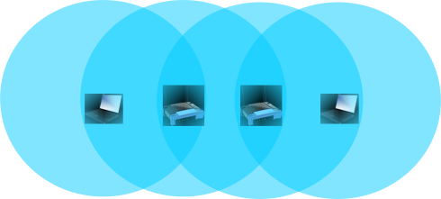
Cenário:
Dois APs, no raio de alcance um do outro.
Mas
: cada AP está fora do raio de alcance do cliente do outro BSS.
Suponha que ambos os APs tenham quadros para transmitir a seus clientes.
Transmissões podem ocorrer simutaneamente?
O Problema do Terminal Exposto (II)
Não: CSMA/CA (geralmente) não permite.
Suponha que o AP da esquerda comece sua transmissão primeiro.
Detecção de portadora fará AP da direita entrar em
backoff
.
RTS/CTS também não resolve:
Ao receber o RTS do AP da esquerda, AP da direita também entra em
backoff
.
Quadros do IEEE 802.11: Endereçamento (I)
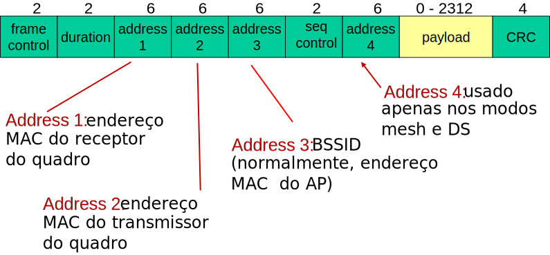
Quadros do IEEE 802.11: Endereçamento (II)
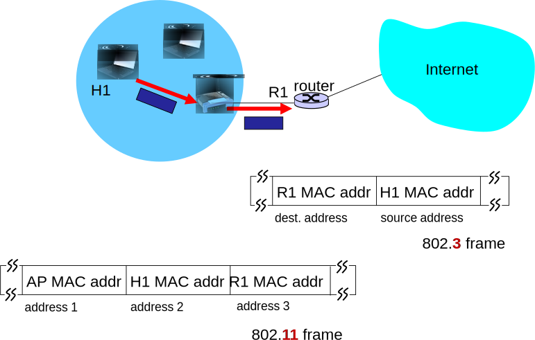
Quadros do IEEE 802.11 (Mais)
IEEE 802.11: Mobilidade Dentro da Mesma Sub-rede
Padrão prevê
handoff
do cliente entre APs de uma mesma rede.
Mesmo ESSID.
Através de um
quadro de reassociação
.
“Estado do cliente” é transferido entre APs.
H1 permanece na mesma sub-rede.
Endereço IP pode continuar o mesmo.
Ponto de vista do
switch
: a qual AP H1 está associado?
Auto-aprendizado (Capítulo 5).
Switch
recebe quadro originado em H1.
Armazena a informação da porta.
Importante: decisão de mobilidade é do cliente!
Adaptação Automática de Taxa (I)
Adaptação automática de taxa:
Estação base e hosts dinamicamente alteram taxa de transmissão.
Forma de compensar variações no SNR (
e.g.
, devido a mobilidade).
SNR diminui e BER aumenta a medida que host se distancia do AP.
Quando o BER se torna muito alto, escolhe-se taxa mais baixa (mas com BER menor).
Adaptação Automática de Taxa (II)
Na prática, mecanismos de adaptação de taxa não medem diretamente SNR.
SNR é inferido indiretamente através de parâmetros como a
perda de quadros
.
Aumento na perda pode indicar redução no SNR.
(Mas nem sempre!)
Exemplo de mecanismo comum: ARF.
Auto-Rate Fallback
.
Dez quadros transmitidos com sucesso em sequência: aumente a taxa.
Dois quadros perdidos consecutivamente: reduza a taxa.
Economia de Energia no IEEE 802.11 (I)
Por quê?
Dispositivos sem fio são (muitas vezes) alimentados por bateria.
Celulares, tables, laptops, ...
Baterias têm capacidade limitada.
Em certos dispositivos, interface sem fio é um dos componentes que mais consomem energia.
Mesmo quando apenas ouvindo o meio.
Logo, grande potencial de economia.
IEEE 802.11 se preocupa com consumo energético em vários contextos.
Economia de Energia no IEEE 802.11 (II)
Gerenciamento de Energia:
Host informa ao AP: “vou dormir até o próximo
beacon
”.
AP sabe que não deve transmitir quadros para o host.
Host acorda antes do próximo
beacon
.
Quadro de
beacon
:
Contém lista de hosts para os quais AP possui dados a transmitir.
Nó permanece acordado se está na lista.
Caso contrário, pode voltar a dormir até próximo
beacon
.
Economia de Energia no IEEE 802.11 (III)
Detecção Virtual de Portadora:
Objetivo: economizar energia durante a detecção de portadora.
NAV:
Network Allocation Vector
.
Funcionamento:
Quadros contém campo de duração: tempo necessário para aquela transmissão (incluindo
ack
).
Sempre que estação recebe quadro, lê campo de duração.
Configura temporizador (NAV) para o valor adequado.
Durante aquele período, não há necessidade de realizar a
detecção física da portadora
.
Também utilizado com RTS/CTS.
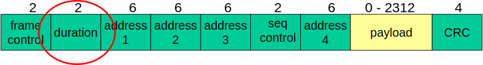
IEEE 802.11: Eficiência (I)
O IEEE 802.11 prevê várias taxas.
Possivelmente, escolha de um algoritmo de adaptação de taxa.
Suponha que uma taxa
nominal
de 11 Mb/s tenha sido escolhida.
Qual é a
vazão efetiva
do enlace?
Protocolo adiciona uma série de
overheads
:
Cabeçalhos, preâmbulos.
IFS,
Acks
, RTS/CTS.
Taxa de transmissão líquida pode ser bem mais baixa.
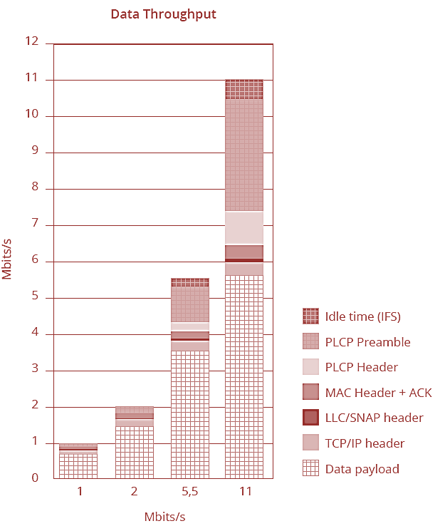
IEEE 802.11: Eficiência (II)
Outros fatores:
Perdas de quadros:
Uma parcela
representativa
das transmissões pode falhar.
Tempo de transmissão desperdiçado.
E completamente, já que não há detecção simultânea de colisões, por exemplo.
Pior: quanto maior o número de retransmissões de um quadro,
maiores
os tempos esperados de
backoff
.
Exponencialmente!
Taxas de transmissão básicas:
Geralmente baixas.
Usadas para transmissão de quadros de controle, gerência.
Associação,
beacons
,
probes
, ..., RTS, CTS, muitas vezes
Acks
.
Estes quadros são pequenos,
mas transmitidos a taxas baixas
.
Ou seja, consomem muito tempo!
Corolário:
quanto mais alta a taxa de transmissão selecionada, menos eficiente é o padrão!
Redes Wi-Fi Densas (I)
Múltiplos APs espalhados por um ambiente.
Conectados por um
sistema de distribuição
.
Aumentam
capacidade
da rede.
Planejamento com
canais ortogonais
.
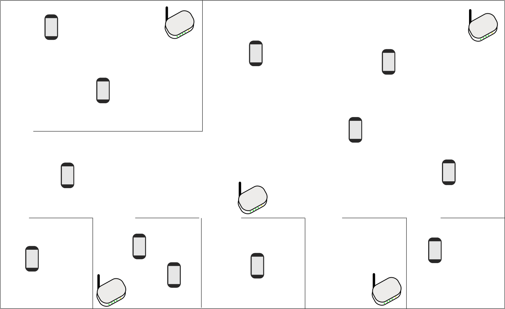
Redes Wi-Fi Densas (II)
Idealmente
, clientes se espalhariam de maneira
uniforme
.
Número de clientes
associados
a cada AP seria relativamente equilibrado.
Balanceamento de carga
.
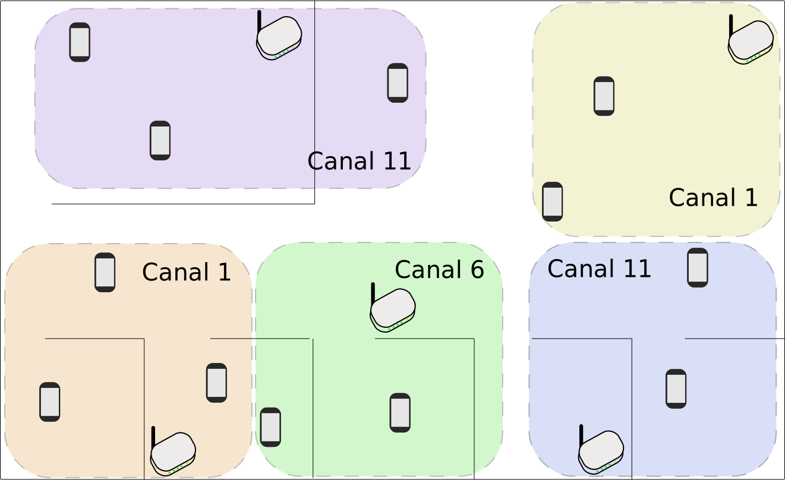
Redes Wi-Fi Densas (III)
Mas na prática...
Decisão de associação é
prerrogativa do cliente
.
Associações ocorrem de forma
descoordenada
, desbalanceada.
Alguns APs quase sem carga, outros
sobrecarregados
.
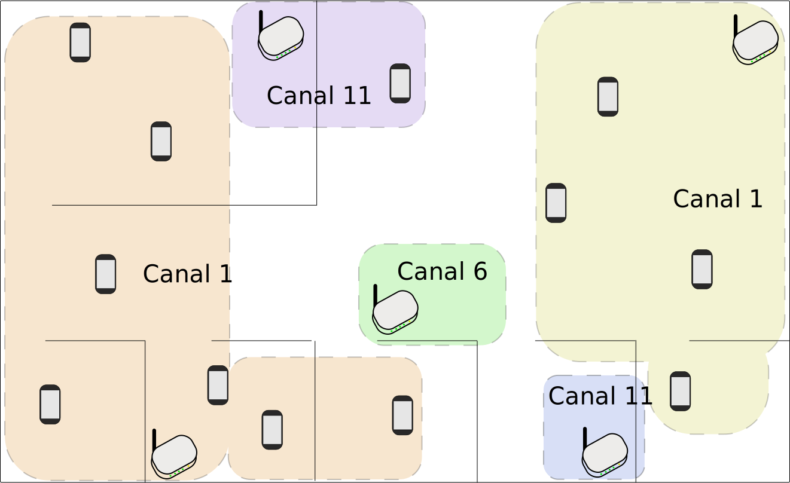
Redes Wi-Fi Densas: Outras Questões
Além do balanceamento de carga:
Seleção (possivelmente dinâmica) de canais.
Como atribuir canais ortogonais aos APs vizinhos?
Considerando ainda que:
Há geralmente outras redes próximas não controladas.
Redes diferentes ocupam canais de formas diferentes.
Possível uso de um
controlador
.
Uso de
micro-células
.
Propositalmente
reduzir alcance
do AP.
Diminuindo potência de transmissão.
Aumenta o
reuso espacial
.
Mais APs
não interferentes
em uma mesma região.
Maior capacidade.
Instabilidade na associação dos clientes.
Problema do “ping-pong” [Balbi
et al.
2016].
Redes Wi-Fi Densas: Ping-Pong (I)
Cliente pode estar na região de alcance de
múltiplos
APs.
Critério de seleção do “melhor” AP
não é padronizado
.
Deixado a cargo da implementação.
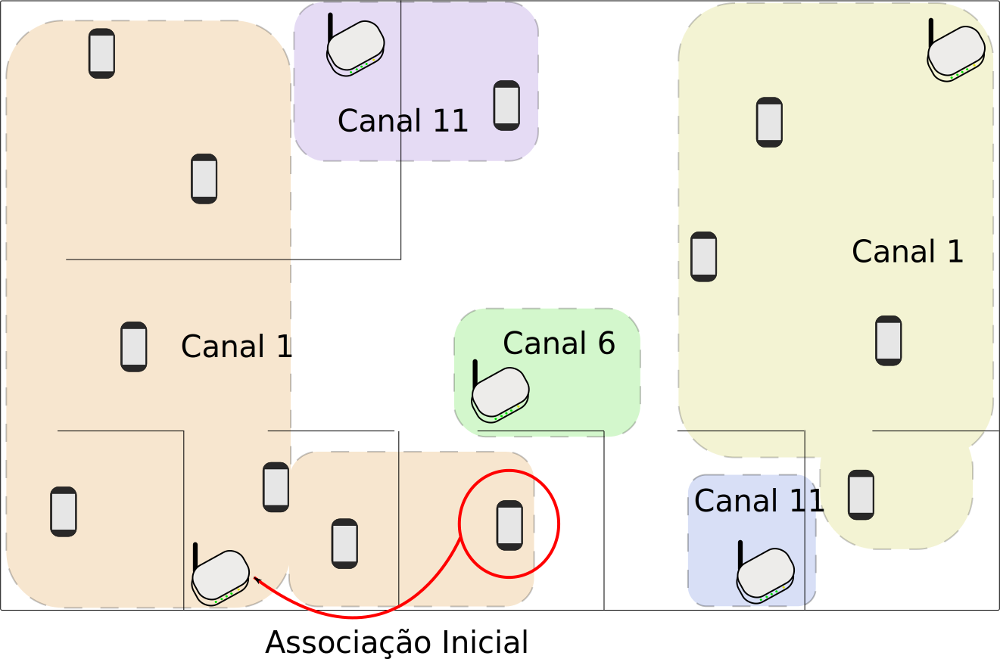
Redes Wi-Fi Densas: Ping-Pong (II)
Mesmo associado, cliente continua avaliando alternativas.
Através de
beacons
, anúncios dos APs.
Meio sem fio sofre de
alta variabilidade
.
“Melhor AP” pode variar com o tempo ⇒
handoff
.
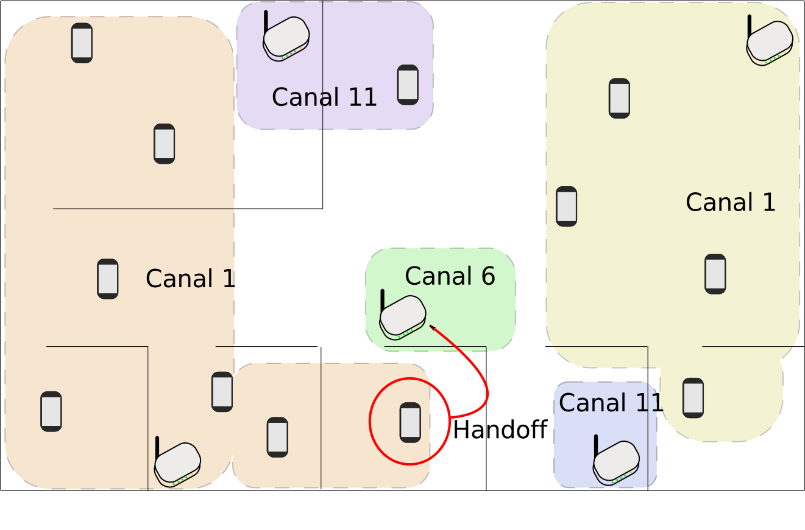
Redes Wi-Fi Densas: Ping-Pong (III)
Processo continua, novas trocas podem ocorrer.
Devido à variabilidade, pode haver
alternância frequente
de associações.
e.g.
,
handoffs
a cada 30 segundos.
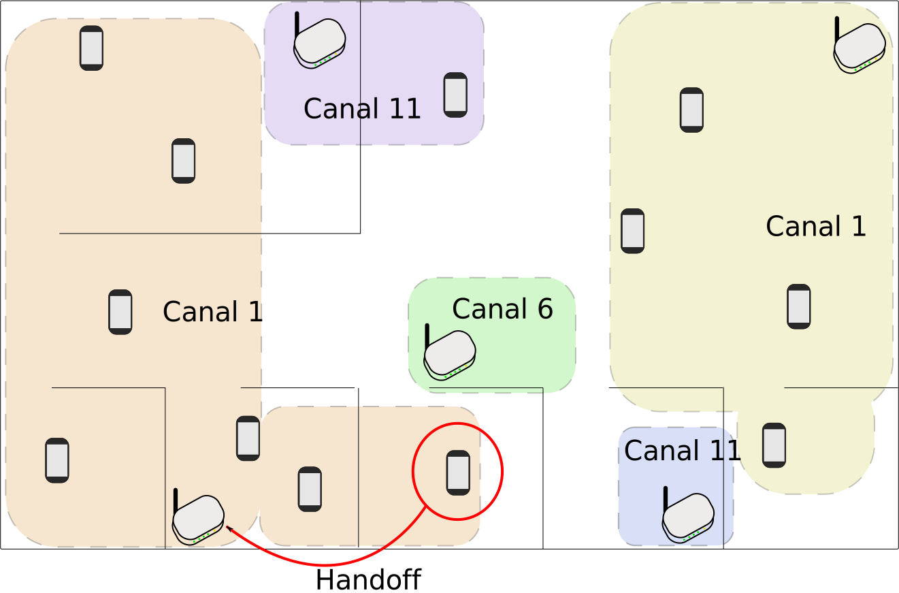
Redes Wi-Fi Densas: Ping-Pong (IV)
Dependendo do cenário, pode envolver mais que dois APs.
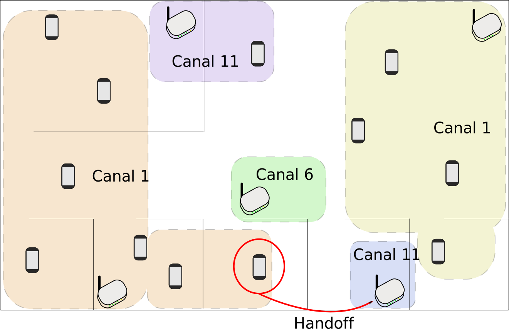
Resumo da Aula (I)...
RTS/CTS: mecanismo de
reserva virtual.
RTS:
Request-To-Send
.
CTS:
Clear-To-Send
.
Enviado pelo receptor, autorizando.
Pode
reduzir quantidade e efeito
de colisões.
Principalmente em casos de terminais escondidos.
Nem sempre efetivo.
Introduz
overheads
.
Limiar de RTS/CTS.
Problema do terminal exposto:
Transmissões simultâneas que não causariam colisão são suprimidas pelo CSMA/CA.
Não resolvido pelo RTS/CTS.
IEEE 802.11: endereços.
Quatro campos previstos no cabeçalho.
Origem e destino
daquela transmissão sem fio
.
Mas também BSSID, destinatário final, ...
IEEE 802.11: mobilidade.
Suportada pelo padrão entre APs de um mesmo ESSID.
Decisão do cliente
.
Adaptação automática de taxa.
Geralmente baseada em quadros perdidos.
Reduz taxas para enlaces “piores”.
IEEE 802.11: economia de energia.
Detecção virtual de portadora.
Duty cycle
entre
beacons
.
Resumo da Aula (II)...
IEEE 802.11: eficiência.
Várias fontes de
overhead
.
Eficiência mais baixa para taxas mais altas
.
Perdas de quadros também contribuem.
Redes densas:
Muitos clientes, muitos APs.
Balanceamento de carga.
Escolha dinâmica de canais.
Planejamento.
Micro-células.
Instabilidade de associação.
Leitura e Exercícios Sugeridos
IEEE 802.11:
Páginas 385 a 399 do Kurose (Seção 6.3).
Exercícios de fixação 5 a 10 do capítulo 6 do Kurose.
Problemas 6 e 7 do Kurose.
Próxima Aula...
Mudaremos o foco da nossa discussão para as redes sem fio de múltiplos saltos.
Veremos alguns tipos e aplicações destas redes:
Redes
ad hoc
móveis
Redes em malha sem fio.
Redes de sensores.
Redes Veiculares.
Também falaremos brevemente sobre alguns desafios nestas redes:
Roteamento.
Economia de energia.